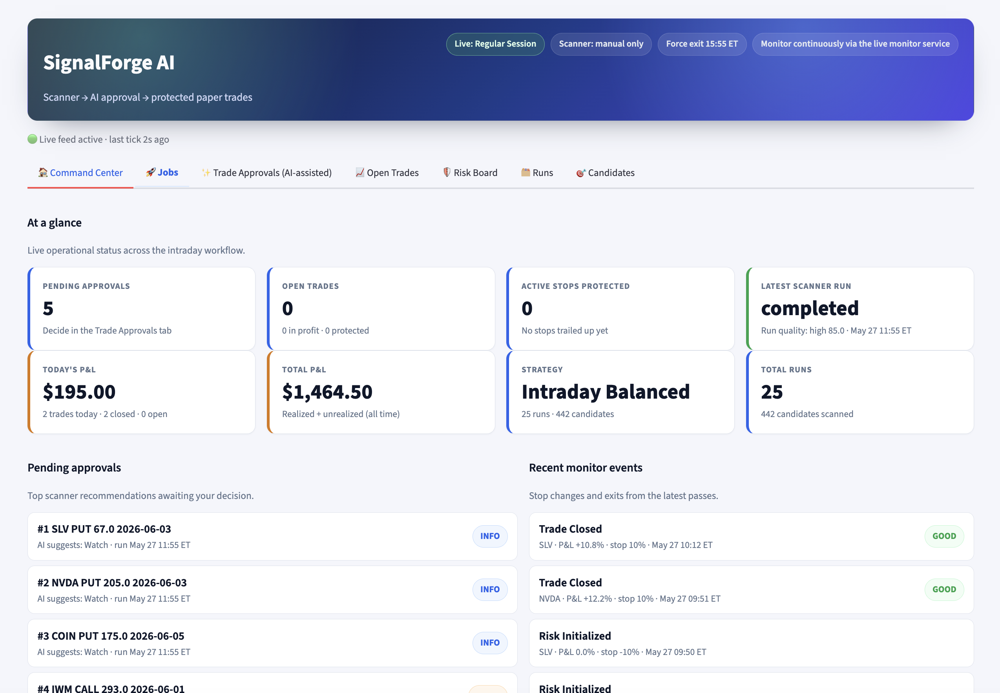
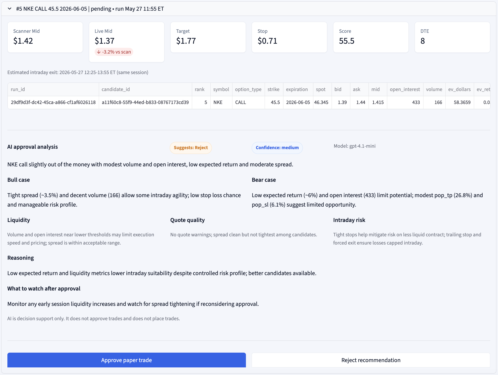

Flagship AI Trading Platform
SignalForge AI
SignalForge AI is my flagship options research platform: a live intraday workflow for scanner automation, paper-trade simulation, outcome tracking, risk dashboards, and AI-assisted trade review.
- Built the inference layer with tool calling for structured trade analysis and approval reasoning.
- Hosted on Google Cloud Run with GitHub Actions CI/CD for repeatable delivery.
- Expanding toward agentic automation that can scan, gather context, decide, replay, evaluate, and improve over time.
- Actively planning GPU optimization and cost-efficiency work for scalable inference experiments.
Postgres inference traces
Scanner → context → decisions
Historical replay mode
Eval harness + PR scorecards
Versioned prompts and agents
Dashboard trace viewer
Alternative-model evals
Self-hosted model cost tests
View on GitHub →

